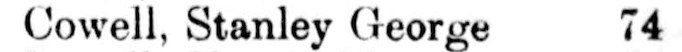

Mercia Florence Isabel Cowell (née Bishop) 1896 - 1961
[ Home ] | [ Calendar ] | [ Surnames Index ] | [ Errors ] | [ Family History ]Mercia Bishop, the wife of Stanley George Cowell (the third cousin twice-removed on the mother's side of Nigel Horne), was born in Snodland, Kent, England on 25 Dec 18961,2 and. She married Stanley (a cutter's pupil with whom she had 1 surviving child, ) in Medway, Kent, England on 6 Jun 19254.
During her life, she was living at 39 Herbert Road, Chatham, Kent on 2 Apr 19111 - less than a mile from her future husband Stanley Cowell who was living at 157 Glencoe Road, Chatham, Kent; at 74 Burnt Ash Road, Lewisham, London, England in 19295; and at 37 Felhampton Road, Woolwich, London on 29 Sept 19392.
She died on 11 Jul 1961 in London3.
Citations
- 1911 Census for England & Wales - Findmypast (was age 14 and the daughter of the head of the household)
- 1939 Register - Findmypast (was the wife of the head of the household)
- England & Wales deaths 1837-2007 - Findmypast
- England & Wales marriages 1837-2008 - Findmypast
- 1929 Electoral Register
Media
1929 Electoral Register

1939 Register Transcription - TNA-R39-0656-0656H-009-25
England & Wales deaths 1837-2007 - BMD/D/1961/3/AZ/000187/080
England & Wales marriages 1837-2008 - BMD/M/1925/2/AZ/000102/013
1911 Census for England & Wales - GBC/1911/RG14/03920/0045/4
1939 Register - TNA-R39-0656-0656H-009-26
Family Tree

Map
Generated by ged2site. Last updated on Jul 3, 2024
Known Issues
No records of living with anyone